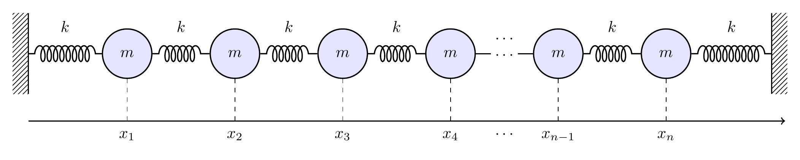
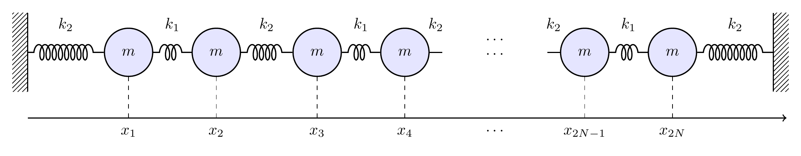
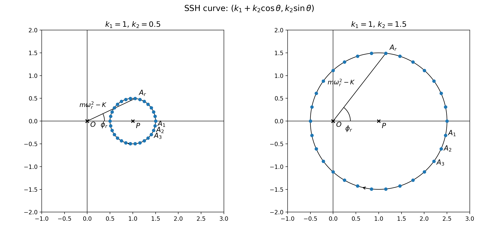
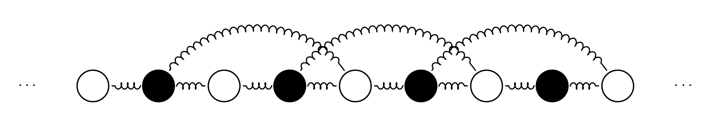
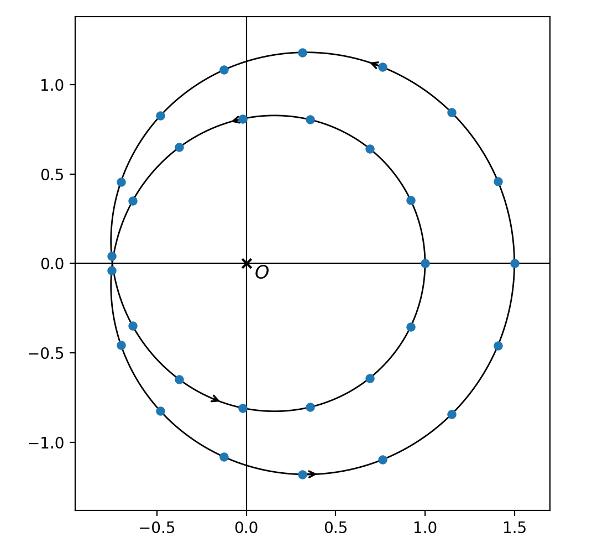
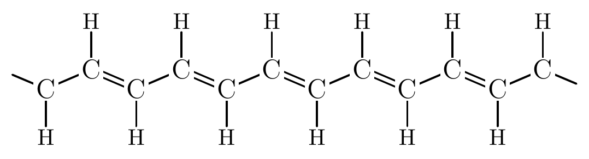
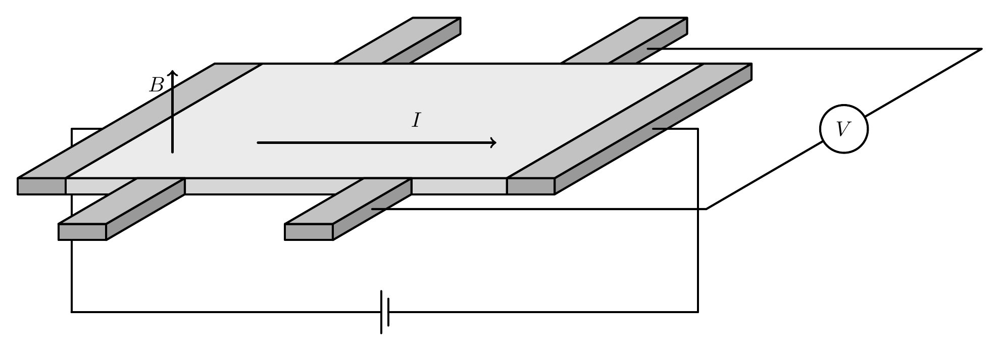

まず，高校物理でも習うばねの振動の話から始めましょう．
壁とひとつの質点をばねでつないだとき，その運動は
という運動方程式で表されます．高校3年生で物理を選択している方であれば，このような式を見たことがあるかもしれません．少しだけ説明すると，
例えば，自動車が発進するときにアクセルを強く踏むと，体が後ろに引っ張られるような感覚がありますが，あれが加速度による効果です．
これを踏まえて上の方程式を見てみると，質点が右へずれると左向きの力が働き，逆に左へずれると右向きの力が働く，つまりばねは質点を元の位置へ戻そうとしている，ということが読み取れます．
実は，この方程式は高校数学で学ぶ範囲の知識だけで解くことができます．解は
という形になります．右辺に出てくるのは三角関数です．\(A\) や \(\theta\) という定数は，\(t=0\) で質点がどんな様子であったか（初期条件）から決まります．
ここまでは，ひとつの物体を一本のばねで壁につないだ場合を考えてきました．それでは次に，物体とばねをたくさんつないだ場合を考えてみましょう．

\(n\) 個の小さな物体を横一列に並べ，隣り合う物体どうしをばねでつなぎます．さらに，両端も壁にばねでつないでおきます．それぞれの質点の，釣り合いの位置からのズレを \(x_1(t),x_2(t),\ldots,x_n(t)\) と書きましょう．
このときの運動方程式も，先ほどと同様ににして立てることができます．このようになります．
これは微分の出てくる連立方程式で，ひとつのばねの場合と比べるとかなり複雑になりました．かなり迫力がありますが，実は，大学1年生で学ぶ線形代数という数学を使うと，この方程式をきれいに整理することができます．
その解き方は大学で勉強するのを待ってもらうことにして，ここでは天下り式に結論をお見せします．上の赤字の項は，本当はない方が正しいのですが，これをつけておくと話がかなり簡単になるので，ここでは少しずるをして付け加えておきます（この点には後で戻ってきます）．
まず，この方程式には，つないだ物体の数が \(n\) 個なら \(n\) 個の，基本となる解があります．これを 固有振動といいます．数式では，\(r=1,\ldots,n\) に対して，
という形で表されます．ここで，\(\omega_r\) は固有振動数と呼ばれる数で，この値が大きいほど一周期の振動にかかる時間が短くなります．これを動画で表示すると以下のようになります．
色の明るいところが振幅の大きい振動をしているところです．この図では縦軸を振動数の2乗 \(\omega^2\) にとっています．だから，上の方の固有振動の方が早く振動していることが見て取れると思います．
この固有振動という言葉は，高校物理ではむしろ音の振動や弦の振動などの「波」の分野で出てくるものです．実は，長く連なったばねの運動はおおよそ波と同じような振る舞いをするのです．
特に，連成ばねの運動，つまり上の微分方程式の解は，これら \(n\) 種類の固有振動を重ね合わせた
という形で表現できます．
次に，少しだけ設定を変えてみます．
今度は，強いばねと弱いばねという，二種類のばねを用意し，それらを交互につないでいきます．

このような模型は，物理学では SSH 模型と呼ばれています．ふたつのばね定数を，\(k_1,k_2\) と書きましょう．質点の位置を左から \(x_1,y_1,x_2,y_2,\ldots\) と書くことにします．
この場合にも，先ほどと同じように運動方程式を書くと，\(K=k_1+k_2\) と置くと
のようになります．
この場合も，先ほどと同様の数学的手続きによって方程式を解くことができます．やはり詳細は省きますが，ここでは固有振動は，\(r=1,\ldots,n\) に対して
となります．ここで，角度 \(\phi_r\) と振動数 \(\omega_{r,\pm}\) というふたつの謎のパラメータが出てきていて，これらはあとで少し説明します．こちらも動画にするとこんな感じになります．
さて，実は今回は前回と大きな違いがひとつあります．さきほど，「赤字の項をずるして付け加える」という話をしました．ただの連成ばね系ではそれでよかったのですが，今回は実はそうはいきません．赤字の項があるのとないのとで，明確な差異が生じるからです．（この赤字の項の話は繰り返し出てくるので言葉を導入しておきます．赤字項がある場合を周期端，ない場合を固定端と呼びます．）
実は，赤字の項を外すと，ほとんどの固有振動数は先ほどのふたつの区間に分かれたままなのですが，さっき空白だった部分の中央に，ふたつ新しく固有振動が現れます．
この新たに生じた固有振動を見てみると，ひとつの固有振動は左端の点だけがビュンビュン振動していて，それ以外の点はほとんど動いていません．一方でもうひとつはその逆で，右端の点だけが振動していてそれ以外の点はほとんど動きません（実はこの説明は少しの嘘を含みます）．その様子は，他の固有振動たちとは大きく異なることが動画から見て取れるかと思います．このような特殊な振動を，ここでは端振動と呼ぶことにしましょう．
この端振動の面白いところは，\(k_1\) を固定して \(k_2\) を色々動かしたとき，この端振動の存在が切り替わる瞬間があるということです．これも動画にしてみると明白です．
\(k_2\) が \(k_1\) とぴったり一致する，つまりただの連成振動になる瞬間が，切り替わりのタイミングです．この瞬間，固有振動数が密に分布している高低ふたつの区間が衝突します．その手前，\(k_2\lt1\) のときには，中間の空白の中には固有振動数はありません．一方で，\(k_2 > 1\) のときには，中間の空白の中に固有振動数が発生しています．そしてこのふたつは必ずペアになっています．
実は，理由を飛ばして結論だけ言うと，この SSH 模型の方程式の解法というのは，その背後にある曲線の存在が隠れています．その曲線は，ばねの形状のような素朴な幾何学的実体とは関係なく，純粋に方程式の数学的性質から像を結ぶ，抽象的な曲線です．専門用語では波数空間とか Brillouin 領域という名前がついています．その曲線とは，\((k_1,0)\) を中心とする半径 \(k_2\) の円周です．

この曲線は，まず，固有振動とその振動数を定める数 \( \omega_r\), \(\phi_r\) を知っています．この円周上に時計回りに等間隔な点 \(\mathrm{A}_1\), \(\mathrm{A}_2\), \(\ldots\), \(\mathrm{A}_n\) を取ります．三角関数を知っている人に向けてこれらの点の座標を式で書いておくと
となります．すると，先ほどお見せした固有振動の式に出てくる \(\omega_r\) と \(\phi_r\) は，それぞれ
と表すことができます．このことから，曲線が原点 \( \mathrm{O}\) と交わらない限り，先ほど動画で見た通り，固有振動数の分布が \( \omega_{r,+}\) たちの分布する上の区間と \( \omega_{r,-}\) たちのあつまる下の区間のふたつに分離します．
そしてさらに，この曲線は固定端（赤字項なし）において端振動が発生するかどうかも知っています．この円周が原点 \(\mathrm{O}\) の周りを回っていないうちは端振動が発生せず， \(\mathrm{O}\) の周りを回るくらい半径が大きくなったら端状態が発生するのです．
さらに「実は」を重ねます．実は，ここで起きていた「微分方程式の背後にある曲線が隠れていて，この曲線が固有振動や端振動の有無を制御している」という現象は，もっと一般的な状況でも成り立ちます．例えば，ちょっともはやばねを使って実現するのは難しいのですが，純粋に数学の問題として
のような方程式を考えてみます（\( K=k_1+k_2+k_3 \)）．ちょっとわかりにくいかもしれませんが，青字の \(k_1\) の項の右上と左下に橙字の \(k_3\) が係数の項を加えたものです．隣接する質点同士に加えて，3つ先の質点とも押し合っているというものです．無茶を承知でばねの絵で表現するなら，こんな感じでしょうか．

ここでは，固有振動の様子は以下のような曲線によって制御されています．

さっきは円でしたが，今度はもう少し複雑なカーブを描く曲線が出てきました．ここでは，曲線が \(0\) の周りを \(2\) 回巻きついています．この曲線上から等間隔に点を取ると，それらの点の原点からの距離とか角度を使って周期端（赤字項あり）の場合の固有振動を表示することができます．
そしてさらに，固定端（赤字項なし）の場合の固有振動を動画にすると次のようになります．ここでは，左端に局在した端振動が2つ，右端に局在した端振動が2つ，それぞれ存在することが見て取れます．
これらふたつの例を含む，たいへん一般的な事実として，この種の微分方程式においては，次が成り立ちます．
右辺の数のことを，トポロジーでは巻きつき数と呼びます．この等式は，物性物理（まだ物質の話は出てきていませんが）の業界でバルク・境界対応と呼ばれている一般原理の例のうちのひとつです．
この事実，つまり端に局在する端振動の個数が背後にある曲線の巻きつき数と一致するという事実が，何を意味するかについて，もう少し吟味してみましょう．
巻きつき数には，ある興味深い性質があります．それは，この数が曲線を少し動かした程度ではかわらないという不変性です． 2 周巻きついている曲線を，ほんの少しずらしただけでは， 1 周になることはありません．それどころか，曲線をもっと大きく動かして，まったく異なる見た目の曲線にまで変形したとしても，それが連続的な変形で，かつ原点を横切らない限り，巻きつき数を 2 から 1 に変えることはできません．巻きつき数が変わるときには，必ず曲線が原点を通過しています．
このように，連続変形に関して不変な性質や量に特に興味を持ってそれを研究するのが，トポロジーという数学の分野です．
この巻きつき数の性質は，先ほどの等式を介して端振動に引き継がれます． つまり，ばね定数を少しいじって別のばね列を組み立てても，（必要な条件を守ってさえいれば）端状態がいくつ残るかという数は変化しない，ということです．
ごく素朴に考えると，SSH模型で端に局在していた振動が，ばね定数などの条件を動かすにつれてだんだん中央の方に広がっていき，気づいたときには端状態ではなくなっている，という連続的な変化は，起きてもおかしくないもののように思えます．壁や床に抑えられているわけでもないのに，ある動きが禁止されているというのはおかしなことです．
しかし実際にはそうはならず，ある時点で端に局在しているならば，そこからばね定数を連続的に動かしても，端状態は端に局在したままであり， 1 つなら 1 つ， 2 つなら 2 つと個数が保たれます． また，その固有振動数もまた，空白の中央にピタッと固定されていて，そこから動きません．端状態が保たれなくなるのは高低ふたつの固有振動数区間が接するときであり，これは曲線が原点を通過する瞬間です．
こうした性質を持つことを，端振動は頑健（robust）であると言います．これは別の言い方をすると，\(k_1\) や \(k_2\) を精密に調整しなくても，おざなりな準備をして適当に実験をしても，重要な大小関係 \(k_1 < k_2\) さえ保たれていれば，端振動を見つけることができる，ということを意味しています．これは物理現象としても興味深く，また利用の余地を感じさせるものです．
先ほどチラッと言葉を出しましたが，この種の現象は，例えば金属のような物体の性質を調べる物性物理学において，特に注目されて利用されています．
実は，今回ご説明した微分方程式やその解き方は，物理に限らず様々な現象を記述する微分方程式に対してかなり普遍的に適用可能な手法です．特に，熱，波，量子力学の 3 つは，大きく共通する数学的基礎を持っています．
ここまで考えてきたばねの模型も量子力学の模型に置き換えることができます．先ほどの SSH 模型は，ポリアセチレン分子の中を動く電子を記述する模型と，数学的構造を共有しています．特に，ポリアセチレンにおいても，端に局在している電子を見つけることができるのです．

そして，電子の運動を記述する量子力学においては，トポロジー的な現象は，ばねの模型のような直線上，一次元的な模型だけでなく，平面上，すなわち二次元的に分布する模型において，より重要な現象が現れます．
金属の板を用意し，この金属板に対して垂直な方向に磁場をかけます．その状態で，左から右へ電流を流します．すると，磁場の方向とも電流の方向とも直交する，もうひとつの方向に電圧が発生します．これがホール効果です．これも高校物理に含まれるので，皆さん近いうちに勉強されるかと思います．

このホール効果において，磁場が十分に強く，温度が十分に低いときには，
という関係が成り立つことが知られています．ここで， \( I \) は流した電流，\(V \) はそれによって生じた電圧です．それらの比である \( \sigma_{\mathrm{Hall}} \) を伝導度と呼びます．このように伝導度が飛び飛びの値しか取らなくなる現象を量子ホール効果といいます．これは1980年に von Klitzing によって初めて実験的に観測されました．
量子力学に基づいて微分方程式を立て，固有振動やその振動数を解析すると，以下がわかります．
固定端において新たに発生した固有振動の様子を動画にすると次のようになります．
今度は，波のかたまり (wave packet) が，境界上を反時計回りに運搬されていることがわかります．これは電子のかたまりなので，運搬されると電流が流れます．そして，伝導度はこのかたまりの個数の定数倍になります．個数というのは整数値なので，量子ホール効果が得られるというわけです．
さて，SSH模型の運動が数学的にはある曲線によって制御されていたように，この系を記述する微分方程式もまた，それを解く過程で，ある図形（空間）によって制御されます．
それは素朴な物理的実体を持つ，我々が目で見たり住んだりできる空間というよりは，純粋に数学的構造として発見されるものです． そしてそれはもはや平面の中の曲線のような想像しやすい対象はなくて，2次元の曲面（より正確には 2 次元トーラス）が，非常に高次元の空間 \( X \) の中に像を結びます． ここで \(X \) とは，例えば関係式
を満たす点 \( (a,b,c,x_1,y_1,x_2,y_2,x_3,y_3) \)の集まりという，9 次元空間のなかの 4 次元部分空間だったりします．
このような空間は，もはや絵に描いて目で見ることはほとんど不可能です．しかし，抽象的な数学の力を使うことで，曲面が \( X \) のどこかの "穴" に "巻きついて" いてほどけない，というようなことが起きうることを論証することができます．これは素朴な直感を超えた論理です．そして，この "巻きつき" を数える整数（これにはChern数という名前がついています）が，まさに \( \sigma_{\mathrm{Hall}} \) の係数になることが知られています．これは幾何学においてはたいへん有名な整数であり，それが物理的実現を持つことは我々数学者にとっても驚くべきことでした．
最後に，この量子ホール効果の役に立つ側面についてお話ししようと思います．ここでは，先ほど説明した，「大雑把に実験をしても同じ値が得られる」という，頑健さの特徴が非常にうまく機能します．伝導度の係数である \( e^2/h\) は，電気素量（電子の電荷） \(e\) と Planck 定数 \(h\) だけから定まります．いずれも，物理学において極めて基礎的な定数です．そして，実際に実験をすると，トポロジーを背景に持つ測定値の頑健さによって，この値（だいたい \(10^{-5}\) 程度）が，実験器具の精度にかかわらず極めて精密に測定できます．実は，現在我々が採用しているキログラムの定義は，この実験結果をもとにしているのです．
トポロジーという抽象的な数学は，それ自体で独立した価値を持っていると私は確信していますが，実はそれだけではなく，我々の生活に根ざしたものごとの土台にも確かになっているという，一例をご紹介しました．